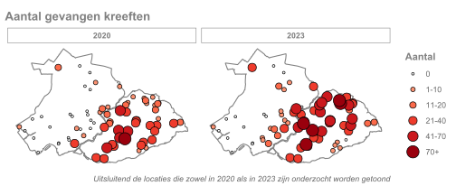
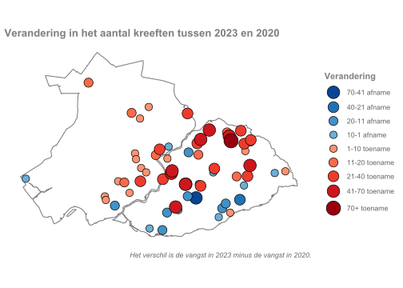

Hoofdstuk 4 Vergelijking 2020 en 2023
In 2023 is de monitoring voor de vierde keer gedaan. Dit jaar zijn dezelfde meetpunten geselecteerd voor het onderzoek als in 2020. Hierdoor kan nu ook gekeken worden naar de verschillen tussen jaren op dezelfde meetpunten. Door verschil in de toestemmingen zijn voor een deel andere meetpunten bemonsterd. In 2020 was toestemming voor 93 meetpunten, in 2023 voor 117 meetpunten. In totaal is er nu data voor 136 meetpunten, waarvan 75 meetpunten in beide jaren zijn bemonsterd. Ten opzichte van 2020 zijn er in 2023 op meer meetpunten kreeften gevonden.
Verspreiding
In vergelijking met 2020 lijkt de verpreiding in 2023 te zijn toegenomen. Dit zal voor een deel te maken hebben met het grotere aantal meetpunten. Toch is ook op meetpunten waar in beide jaren is bemonsterd een toename.

Vangsten per jaar
Op de individuele meetpunten is gekeken naar de verschillen in vangsten. Zoals genoemd kon niet voor alle meetpunten de vergelijking worden gemaakt. Op 75 meetpunten is in beide jaren data verzameld.
De verschillen tussen de jaren zijn groot. Op sommige meetpunten zijn tot wel 70 kreeften meer of minder gevangen in 2023. De gemiddelde vangst per meetpunt is toegenomen. In 2020 werden gemiddeld 16 kreeften per meetpunt gevangen. In 2023 waren dit 24 kreeften per meetpunt. Verspreid over het gebied is te zien dat de hoeveelheid gevangen kreeften vooral toeneemt aan de noordkant van de Krimpenerwaard en in de zuid-oosthoek van Schieland. Aan de zuidkant van de Krimpenerwaard zijn juist lagere aantallen gevonden dan in 2023.
